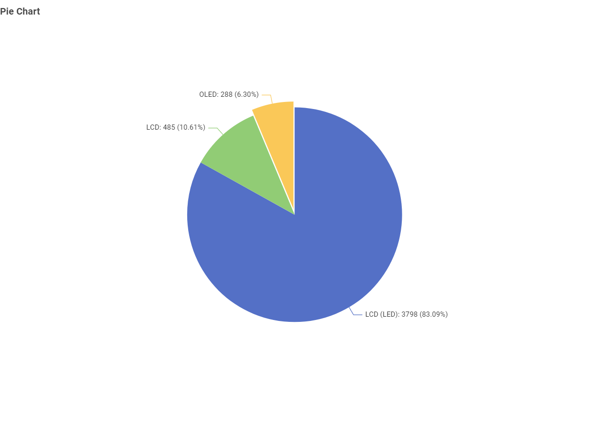
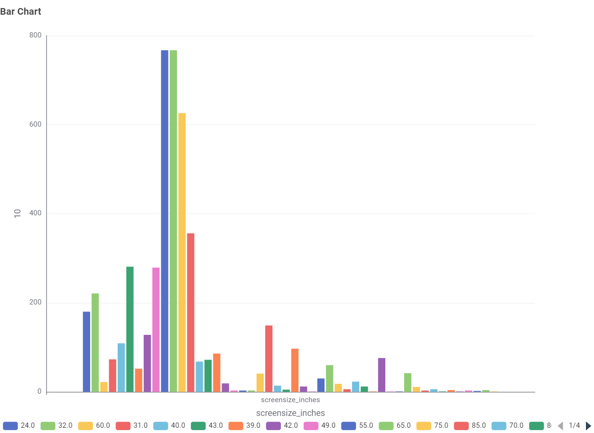
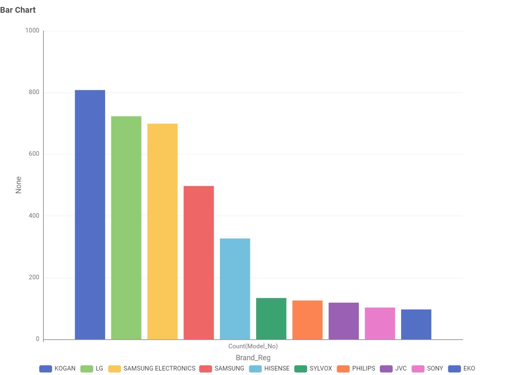
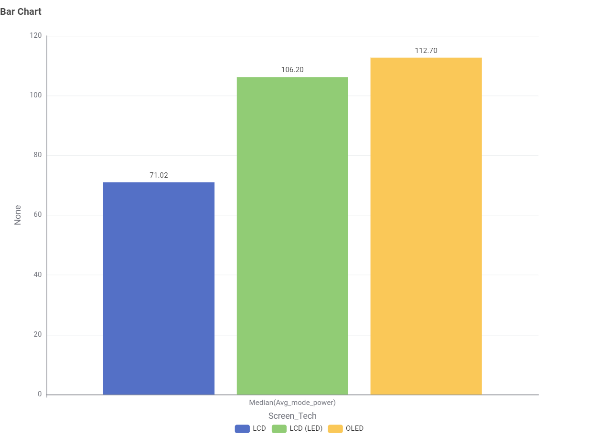
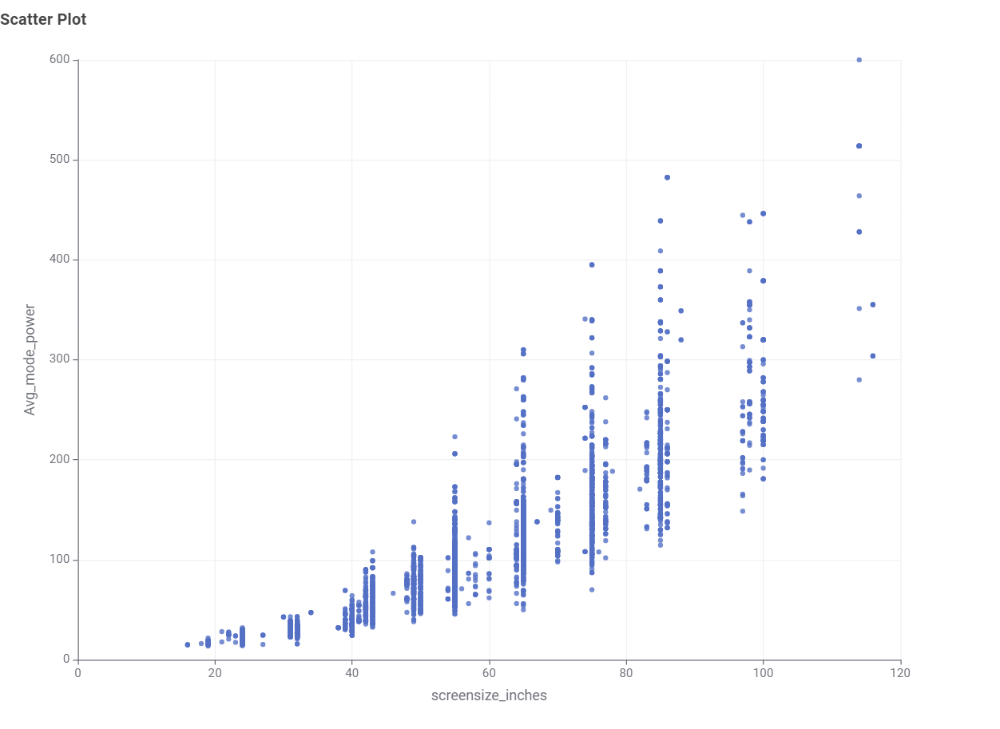
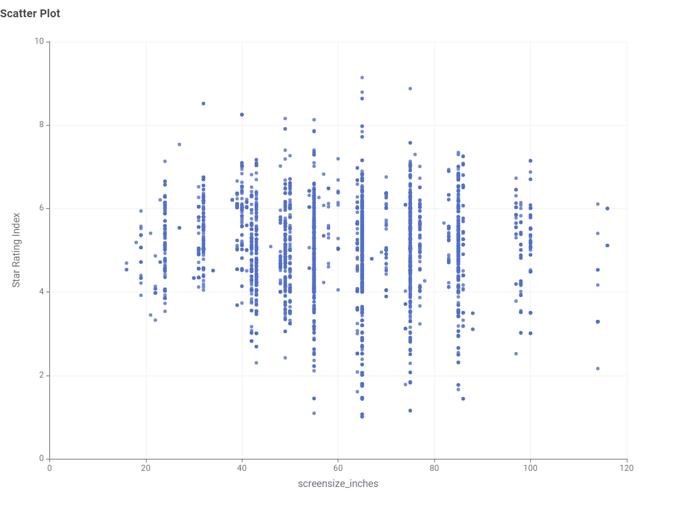
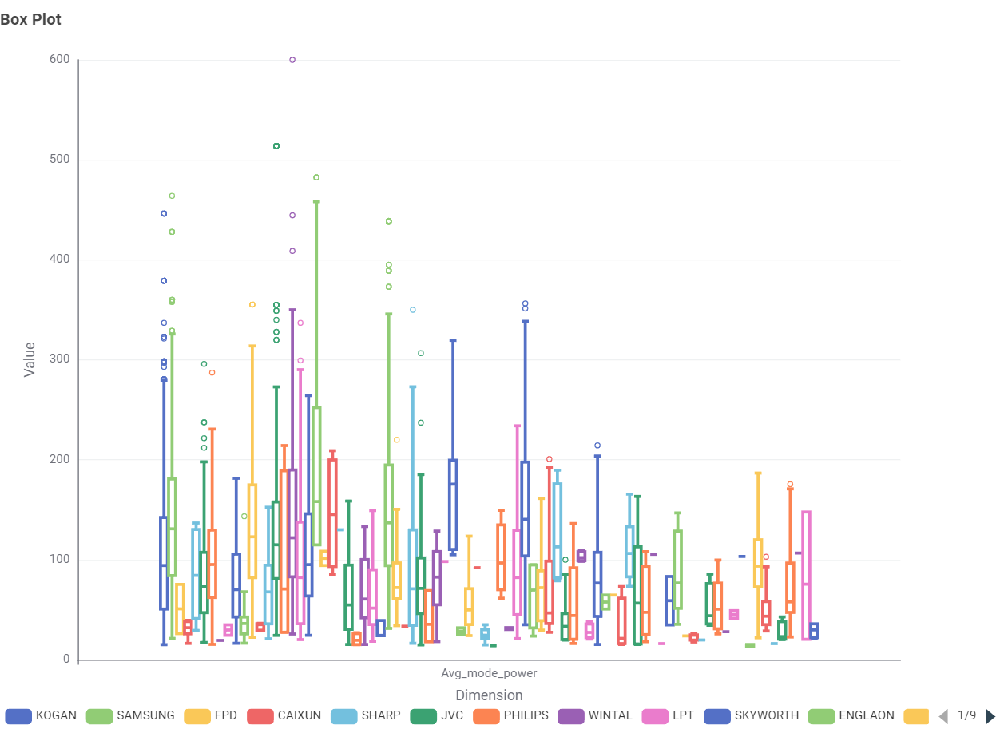

Chart 1: What type of TV screen technologies are currently available in Australia and which are the most frequent?

Most TVs in Australia are LCD LED, while OLED is less common.
Exploring consumer appliance power trends, running costs, and energy conservation benchmarks across Australian households.
Size & technology matter. Larger screens and older tech (e.g., plasma) use more energy. Modern LED/LCD and OLED sets are generally more efficient.
Placeholder note: Insert simple examples of annual kWh for common TV sizes in Australia to make this page concrete.
This section presents findings from the Australian Government's Television Energy Rating dataset. The aim is to help Australian consumers make informed decisions about technology, size, brand, and efficiency.

Most TVs in Australia are LCD LED, while OLED is less common.

55-inch and 60-inch TVs are the most common.

Kogan, LG, and Samsung have the largest number of models on the Australian market.

LCD TVs consume the least power, while OLEDs use slightly more but offer higher performance.

Larger TVs use more power — the relationship is clearly positive.

Star ratings are fairly distributed across all sizes; bigger TVs can still be efficient if well designed.

Yes, power consumption varies noticeably across brands, with major manufacturers exhibiting much wider spreads and higher maximum consumption due to their diverse lineups of larger, high-performance screens.
The dataset indicates that physical screen dimensions serve as the primary driver of domestic power consumption in the Australian television market. While mass-market LED/LCD displays remain the most widely adopted and power-efficient baseline, higher star ratings across all sizes confirm that energy-efficient engineering can significantly mitigate running costs regardless of screen size.
Developed as a technical baseline for interactive web development and future data visualization workflows.
Built by Bosco. The visual identity incorporates color tokens matching the golden power logo.
Data metrics and standards referenced are aligned with the Equipment Energy Efficiency (E3) Program and official Australian GEMS registry benchmarks.
Generative AI assistance was utilized to aid structural boilerplate code and draft domain-specific placeholder summaries.